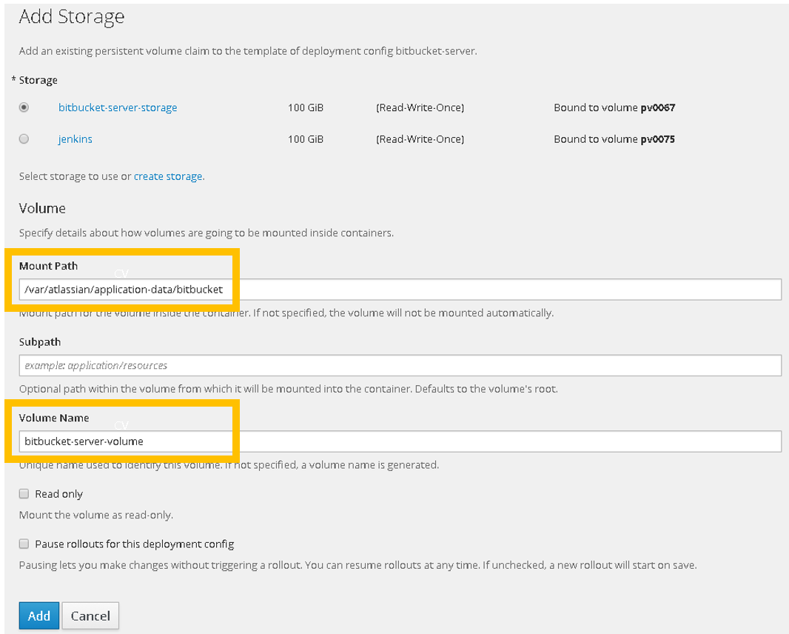

[Under construction]
The purpose of the present document is to provide the basic steps carried out to improve the configuration of BitBucket server in OpenShift.
The improved configuration consists on:
-
Persistent Volume Claims
-
Health Checks (pending to be completed)
Persistent Volume Claims.
Please notice that the BitBucket server container does not use persistent volume claims by default, which means that the data (e.g.: BitBucket server config.) will be lost from one deployment to another.

It is very important to create a persistent volume claim in order to prevent the mentioned loss of data.


Step 3: Introduce the required information
-
Path as it is specified in the BitBucket server Docker image (/var/atlassian/application-data/bitbucket)
-
Volume name with a unique name to clearly identify the volume
